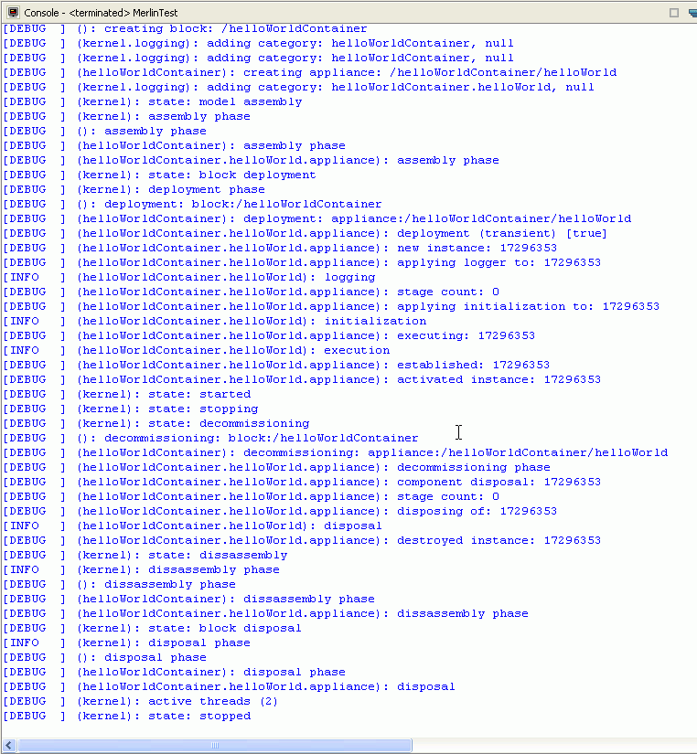

|
|
Creating the "Hello World" component
For creating and running our first simple component we first create a new project named "Hello World".
Please follow the instructions for creating a new MerlinContainer project.
After you have created the project, you should see a project structure like this:

After you have created the new project with the "Hello World" Component, you now should run the component.
This is done by opening the "run / run as... " Action Button.
Now select the "Merlin Container" item and the "Hello World" component will start.

You will see the output of the component in the Console view.

In the next step we will change small peaces in code to get closer to the principles of the Merlin Container.